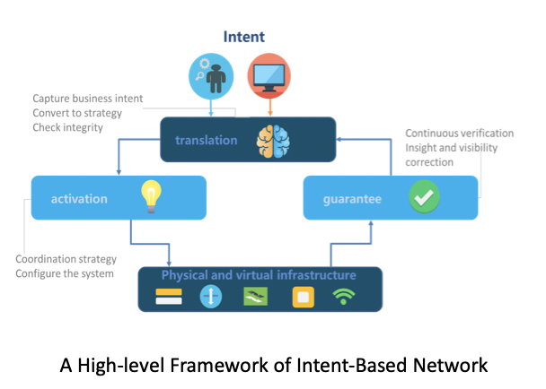

Ruiran Su
I am currently pursuing a DPhil in Engineering Science at the University of Oxford, with a specialization in Natural Language Processing (NLP). My primary research interest lies in the intersection of Graph Neural Networks and Large Language Models, specifically in devising methodologies to predict misinformation and identify potential misinformation spreaders on social media. Additionally, I am intrigued by the development of knowledge graphs tailored for advancing next-generation telecommunication systems.
Education
- 2022 - Present: DPhil in Engineering Science, University of Oxford.
- 2021 - 2022: Assistant Researcher, Guanghua School of Management, Peking University.
- 2020 - 2021: School of Architecture, Tsinghua University.
- 2019 - 2022: BSc in Computer Science, Peking University.
Recent Projects
Intent-based Network Empowered by Knowledge Graph
In recent years, Intent-based Networks (IBNs) have emerged as a revolutionary approach to managing and optimizing complex networks. Nevertheless, modern IBN systems often encounter difficulties in accurately interpreting user intent and translating it into network configurations. Our research introduces an Intent-based Network empowered by Knowledge Graph (IBN-KG), which ingeniously integrates knowledge graph technology with IBN, significantly improving the translation and management of user intents. The study primarily focuses on constructing a knowledge graph for grid scenarios and leveraging this graph to enhance the IBN's performance. Additionally, we present a customized Knowledge Graph construction framework, specifically designed for vertical industry applications, with a special emphasis on smart grid scenarios. This encompasses the development of a unique data layer, extraction of knowledge through natural language processing, knowledge fusion, continuous updating of knowledge, and the application of knowledge through user interfaces. Overall, the fusion of Knowledge Graph technology with IBN heralds a smarter, more adaptable, and efficient method for translating and managing user intent in network configurations, particularly in smart grid applications.
Automatic Scoring of Secondary School Subjective Questions Using Knowledge Graphs
This project focuses on the automatic assessment of subjective questions in Chinese secondary schools, encompassing various subjects like history, geography, politics, etc. The primary goal is to facilitate small-scale, teacher-assisted grading by utilizing a pre-trained corpus composed of textbooks, academic websites, and supplementary materials. Additionally, actual test paper data plays a crucial role, and through collaboration with governmental bodies and enterprises, we have gained access to provincial and municipal Chinese examination data. The project involves converting unstructured text into structured formats, decrypting e-books, circumventing web crawlers’ anti-scraping mechanisms, and ensuring OCR accuracy. The construction of knowledge graphs through entity extraction and relationship analysis allows for the comparison of candidate answers with reference answers based on semantic consistency and sentiment analysis.
Text and Sentiment Analysis of China-Related Articles in the New York Times and Los Angeles Post (2010-Present)
As China's economy has surged, international media coverage concerning China's economy, society, and politics has intensified. The portrayal of China in the US mainstream media reflects not only the Western public's perception but also serves as a gauge of China’s international image. The New York Times, Los Angeles Post, and Washington Post have collectively published over 30,000 articles about China since 2010. Using entity extraction, attribute extraction, and sentiment classification, the analysis is conducted across three dimensions - macro, meso, and micro. The macro framework examines the volume, subject distribution, weightage, and overall trends. The meso framework includes article placement and information sources. The micro framework focuses on high-frequency words, key sentences, and comparison of word tendencies.
Implementing Automatic 5G Network Slicing on the Open Network Automation Platform
Intent-Based Networking (IBN) represents an evolution in networking, wherein network control logic is decoupled, and closed-loop orchestration techniques are employed to automate application intents. An IBN is adaptive and intelligent, capable of interpreting operator intents in real-time to dynamically adjust network configurations and ensure reliability. End-to-end network slicing in 5G and beyond offers immense potential for the telecommunication industry to meet diverse Service Level Agreements (SLAs) for different verticals. However, the realization of this potential requires a smarter and more flexible slicing management framework. Research and standardization bodies such as 3GPP are increasingly focusing on smart slicing, which is geared towards accommodating user intents and requirements through real-time recognition and adaptive network slicing to meet SLAs.
Internship
Publications
Conference Papers:
-
An Intent-based Network Empowered by Knowledge Graph: Enhancement of Intent Translation and Management Function for Vertical Industry
Dong Wang (Supervisor), Ruiran Su
IEEE CIC 2023 | paper -
Trends and Challenges of Policy Verification for Intent-based Networking towards 6G
Dong Wang (Supervisor), Ruiran Su
IEEE CIC 2022 | paper -
An Intent-based Smart Slicing Framework for Vertical Industry in B5G Networks
Dong Wang (Supervisor), Ruiran Su
IEEE CIC 2021 | paper